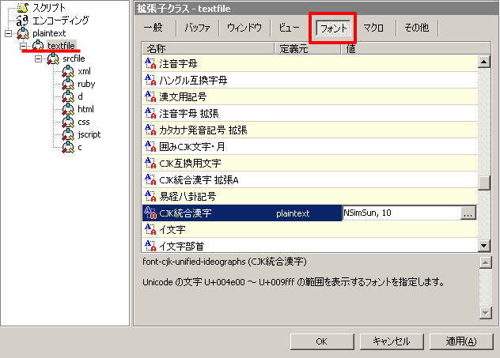

フォントの設定
萌ディタは基本的にUTF-16の対応している範囲でなら大概の言語を入力できます。正直、UTF-16の範囲でも、世界中の実生活で使われている言語はほぼカバー出来ている状況なので、「ヒエログロフ（神聖文字）使いたいんだけど…。」とかいう何処の学者さんか 知らない人以外は、まず困ることはありません。
最近のWindowsでは結構Unicodeフォントは充実しているので、WindowsXPとかなら、何処かから探してこないでもフォントの設定さえしてやれば大概の言語は表示可能になります
まずは、を選択します
出てきたダイアログの、右側ツリーメニューから適当に選択して（デフォルト設定が欲しいわけだから、textfileがお勧め）次に、上のメニューからを選択。
あとは、自分の使いたい言語に対して、適切なフォントを設定してあげてください。今回はNSimSumを設定してあげていますね。
中国語を表示したいのに、ＭＳゴシックとか、日本語の文字しか収録していないセットを設定したら笑われますよ
文字の入力
ココに関しては、解説いたしません。
基本的には、Windows環境なら、Microsoftの配布しているglobalIMEが一番現実的、あとはAtokの文字パレットからUnicodeを呼び出すとかもありますね。
関連リンク
フォント一覧
一応、参考までに、設定すべきフォントなどを…。
| ルーン文字 | Windowsでは標準では搭載されていません、適当に配布元を探して下さい | |
| 朝鮮語 | Courier New | WindowsXPなら標準で搭載 |
| 中国語（北京語） | NSimSum | WindowsXPなら標準でインストールのハズ… |